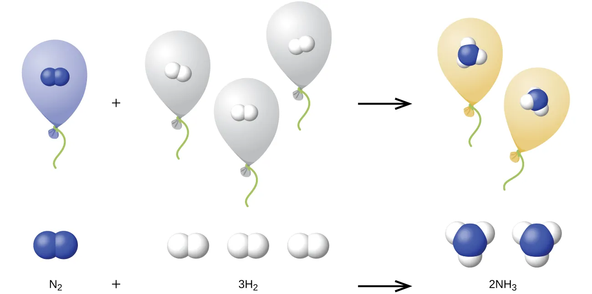
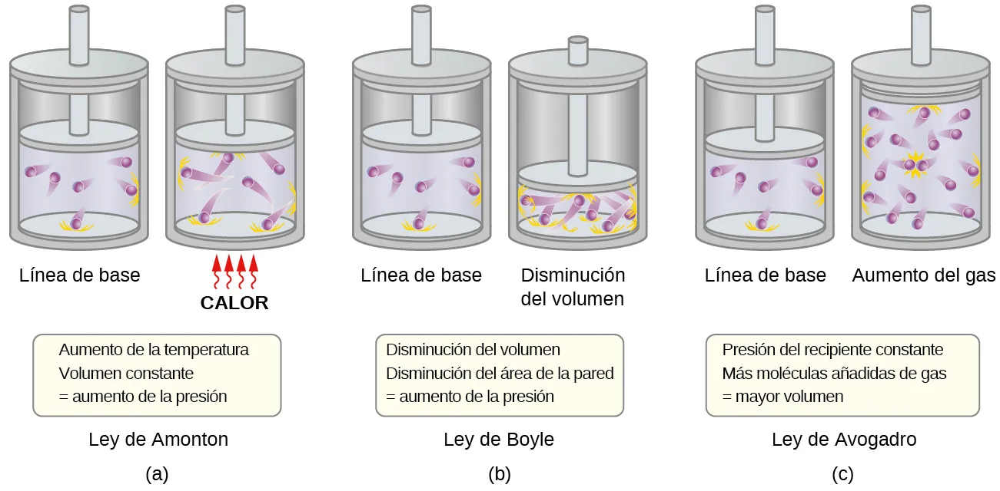
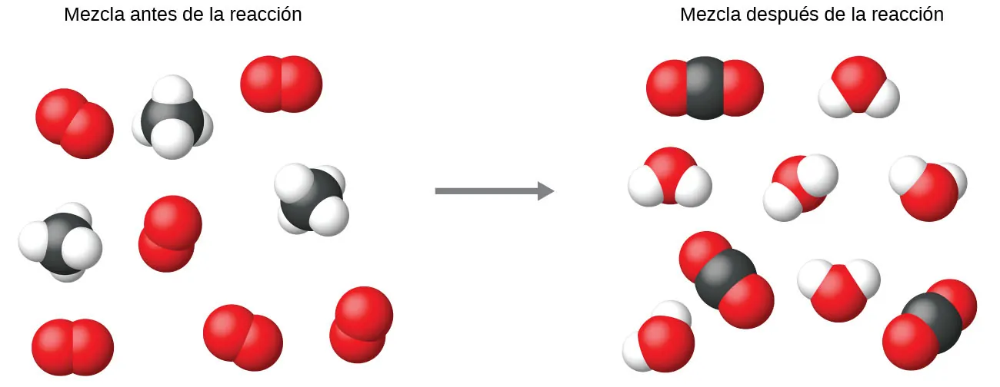
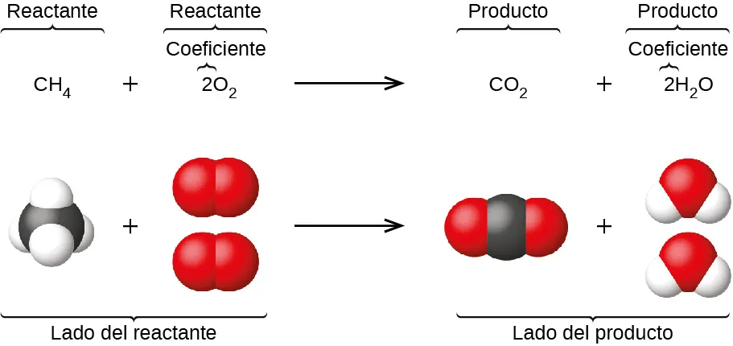
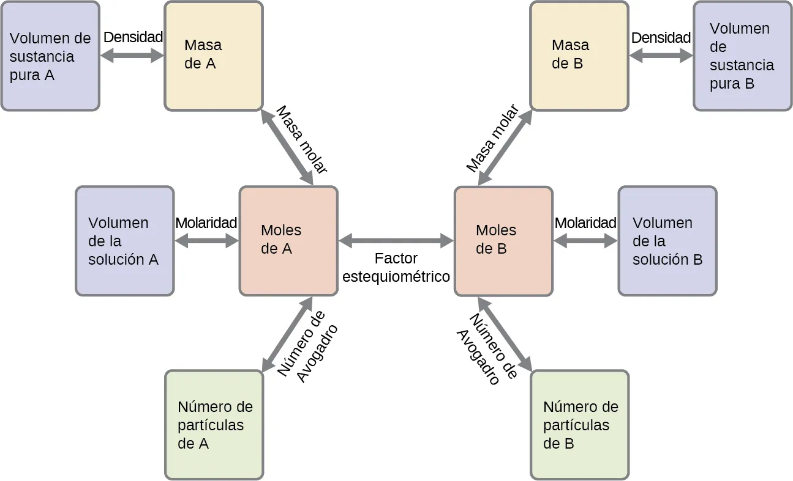
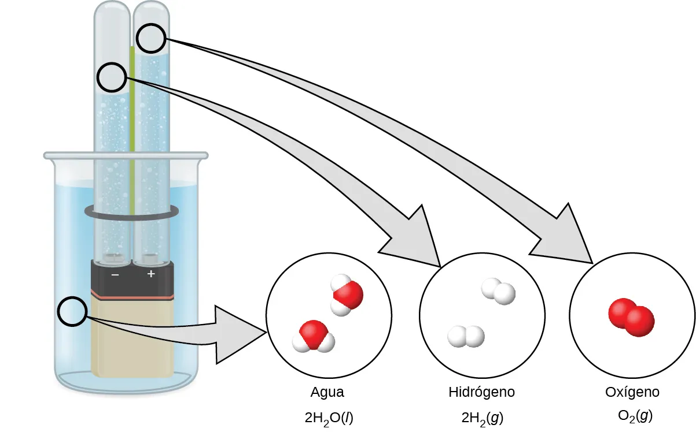
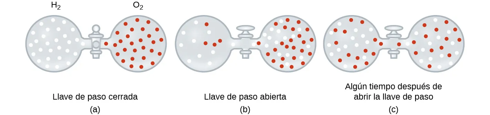
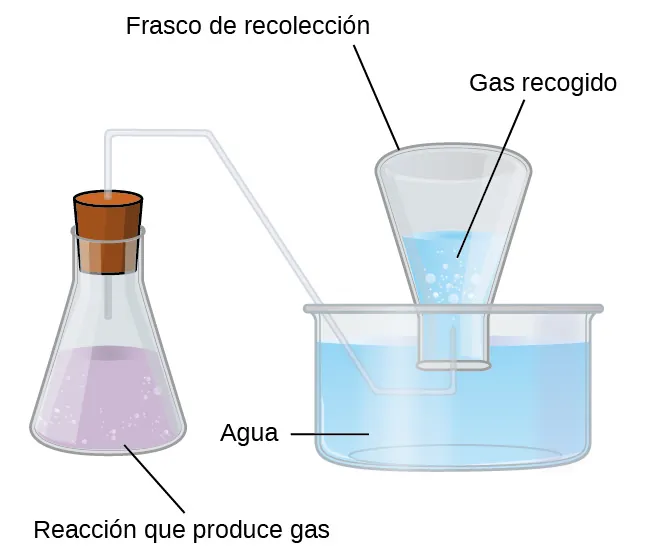
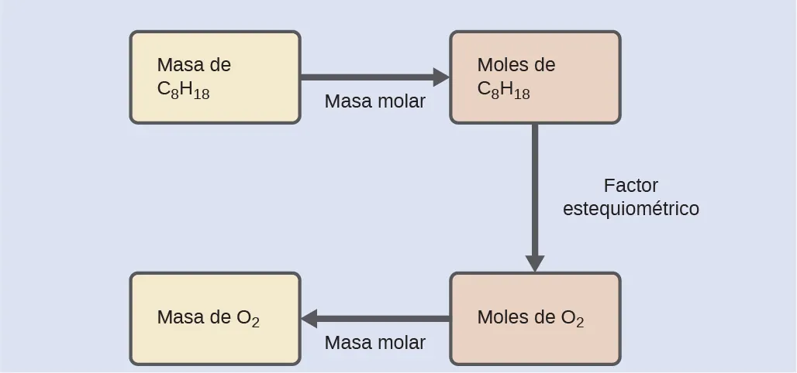

IES Valle del Alberche

📋 Enunciado
Partiendo de la ecuación de estado del gas ideal (\(pV = nRT\)) y de la ecuación química ajustada que establece relaciones molares entre reactivos y productos gaseosos, demostrar que:
Es decir, demostrar que la Ley de Gay-Lussac de los volúmenes de combinación es una consecuencia directa de la ecuación de Clapeyron y de la conservación de los moles en la estequiometría.



🎯 Objetivo
El objetivo es establecer una justificación teórica rigurosa de por qué, en reacciones entre gases, se puede operar directamente con volúmenes sin necesidad de convertir previamente a moles, demostrando que:
- El volumen de un gas ideal es directamente proporcional a su número de moles cuando \(p\) y \(T\) son constantes.
- Por tanto, las relaciones volumétricas son equivalentes a las relaciones molares y, por extensión, a los coeficientes estequiométricos.
Esta demostración simplifica enormemente los cálculos estequiométricos en reacciones gaseosas y justifica el método directo utilizado en numerosos problemas.

🔬 Procedimiento
De la ecuación de Clapeyron, despejando el volumen:
Si consideramos un gas a presión y temperatura constantes (\(p = \text{cte}\), \(T = \text{cte}\)), los términos \(R\), \(p\) y \(T\) son constantes. Por tanto:
donde \(k = \frac{RT}{p}\) es una constante común para todos los gases en esas condiciones. Esto demuestra que:

Consideremos una reacción química ajustada en la que todos los reactivos y productos son gases, medidos a la misma \(p\) y \(T\):
Sean \(V_A, V_B, V_C, V_D\) los volúmenes ocupados por cada gas en las condiciones de la reacción. Aplicando la relación \(V_i = n_i \cdot k\) a cada sustancia:


De la demostración del factor de conversión estequiométrico (Demostración 2), sabemos que para la ecuación ajustada se cumple:
Sustituyendo \(n_i = \frac{V_i}{k}\) en esta expresión:
Como \(k\) es una constante común, puede factorizarse y cancelarse en todos los términos:
Multiplicando todos los términos por la constante \(k\), se obtiene directamente:
Equivalentemente, para cualquier par de gases en la reacción:
El resultado anterior demuestra que, en las mismas condiciones de presión y temperatura:
- El volumen de un gas es proporcional a su número de moles (Ley de Avogadro).
- Por tanto, los coeficientes estequiométricos de la ecuación ajustada representan simultáneamente:
- Relaciones molares entre sustancias.
- Relaciones volumétricas entre gases (mismas \(p, T\)).
Esto permite resolver problemas de estequiometría gaseosa operando directamente con volúmenes, sin necesidad de calcular previamente los moles mediante la ecuación de Clapeyron.


✅ Resultado
Se ha demostrado que, para reacciones químicas en las que todos los reactivos y productos son gases medidos a la misma presión y temperatura, las relaciones entre volúmenes son idénticas a los coeficientes estequiométricos.
Si \(p\) y \(T\) son constantes para todos los gases: \[\frac{V_A}{\nu_A} = \frac{V_B}{\nu_B} = \frac{V_C}{\nu_C} = \frac{V_D}{\nu_D}\]
o equivalentemente: \[V_i = V_j \times \frac{\nu_i}{\nu_j}\]
Esta propiedad, conocida históricamente como la Ley de Gay-Lussac de los volúmenes de combinación, es una consecuencia directa de:
- La ecuación de estado del gas ideal (\(pV = nRT\)).
- La proporcionalidad directa entre volumen y número de moles a \(p, T\) constantes.
- La conservación de los moles en la estequiometría de la ecuación ajustada.


Es crucial advertir a los estudiantes que esta simplificación solo es válida cuando todos los gases se miden en las mismas condiciones de presión y temperatura. Si un reactivo es sólido o líquido, o si los gases se encuentran en condiciones diferentes, debe aplicarse primero la ecuación de Clapeyron para calcular los moles y luego utilizar el factor de conversión estequiométrico. Un error frecuente es aplicar relaciones volumétricas directas cuando las condiciones no son homogéneas.
🖱️ Pulsame — 🧪 DESMITIFICANDO la estequiometría en volumen de gases
Combustión de metano: volumen de oxígeno necesario
Enunciado:
- El metano (CH₄) se quema según: \(\mathrm{CH_4 + 2\,O_2 \rightarrow CO_2 + 2\,H_2O}\).
- Si se queman 25,0 L de CH₄ medidos a 1 atm y 25 °C, ¿qué volumen de O₂ medido en las mismas condiciones, se necesita? ¿Qué volumen de CO₂ se produce?
Resolución paso a paso:
Ecuación ajustada: \(\mathrm{CH_4 + 2\,O_2 \rightarrow CO_2 + 2\,H_2O}\).
Coeficientes: \(\nu_{\mathrm{CH_4}}=1\), \(\nu_{\mathrm{O_2}}=2\), \(\nu_{\mathrm{CO_2}}=1\).
Todos los reactivos y productos son gases medidos en las mismas condiciones (\(p, T\) cte). Por tanto, aplicamos la relación volumétrica:
Resultado: se necesitan \(\mathbf{50,0\,L}\) de O₂ y se producen \(\mathbf{25,0\,L}\) de CO₂.
Síntesis de amoniaco: relación de volúmenes
Enunciado:
- La síntesis del amoniaco se produce según: \(\mathrm{N_2 + 3\,H_2 \rightarrow 2\,NH_3}\).
- Si se introducen 15,0 L de N₂ y 45,0 L de H₂ (ambos medidos a 2 atm y 300 K) en un reactor, ¿qué volumen de NH₃ se obtendrá (medido en las mismas condiciones) suponiendo que la reacción es completa?
Resolución:
Ecuación ajustada: \(\mathrm{N_2 + 3\,H_2 \rightarrow 2\,NH_3}\).
Relación estequiométrica: 1 L de N₂ reacciona con 3 L de H₂ para dar 2 L de NH₃ (en las mismas condiciones).
Disponemos de 15 L de N₂ y 45 L de H₂. La proporción es exactamente 1:3, así que ambos reactivos se consumen por completo (no hay reactivo limitante).
Volumen de NH₃ producido: \(V_{\mathrm{NH_3}} = 15,0 \times \frac{2}{1} = 30,0\,\mathrm{L}\).
Resultado: se obtienen \(\mathbf{30,0\,L}\) de NH₃.
Descomposición del ozono: relación de volúmenes
Enunciado:
- El ozono se descompone en oxígeno según: \(\mathrm{2\,O_3 \rightarrow 3\,O_2}\).
- Si se descomponen 5,0 L de O₃ (medidos a 1 atm y 20 °C), ¿qué volumen de O₂ se forma (medido en las mismas condiciones)?
Resolución:
Ecuación ajustada: \(\mathrm{2\,O_3 \rightarrow 3\,O_2}\).
Relación volumétrica (mismas \(p, T\)): \(V_{\mathrm{O_2}} = V_{\mathrm{O_3}} \times \frac{3}{2}\).
Resultado: se forman \(\mathbf{7,5\,L}\) de O₂.
Combustión de una mezcla de gases (propano y butano)
Enunciado:
- Una mezcla de propano (\(\mathrm{C_3H_8}\)) y butano (\(\mathrm{C_4H_{10}}\)) ocupa 10,0 L a 1 atm y 25 °C.
- Si la mezcla contiene 60% en volumen de propano y 40% de butano, ¿qué volumen de O₂ (medido en las mismas condiciones) se necesita para su combustión completa?
- Ecuaciones: \(\mathrm{C_3H_8 + 5\,O_2 \rightarrow 3\,CO_2 + 4\,H_2O}\), \(\mathrm{C_4H_{10} + \frac{13}{2}\,O_2 \rightarrow 4\,CO_2 + 5\,H_2O}\).
Resolución:
Volúmenes en la mezcla: \(V_{\mathrm{C_3H_8}} = 10,0 \times 0,60 = 6,0\,\mathrm{L}\); \(V_{\mathrm{C_4H_{10}}} = 10,0 \times 0,40 = 4,0\,\mathrm{L}\).
Para el propano: necesita \(5 \times 6,0 = 30,0\,\mathrm{L}\) de O₂.
Para el butano: necesita \(\frac{13}{2} \times 4,0 = 6,5 \times 4,0 = 26,0\,\mathrm{L}\) de O₂.
Volumen total de O₂ = \(30,0 + 26,0 = 56,0\,\mathrm{L}\).
Resultado: se necesitan \(\mathbf{56,0\,L}\) de O₂.

Reacción de gases con reactivo limitante
Enunciado:
- La reacción \(\mathrm{2\,SO_2 + O_2 \rightarrow 2\,SO_3}\) se lleva a cabo en un reactor.
- Se introducen 8,0 L de SO₂ y 5,0 L de O₂ (medidos a 1 atm y 300 K).
- a) ¿Cuál es el reactivo limitante?
- b) ¿Qué volumen de SO₃ se produce (en las mismas condiciones)?
Resolución:
Ecuación ajustada: \(\mathrm{2\,SO_2 + O_2 \rightarrow 2\,SO_3}\).
Relación volumétrica: 2 L de SO₂ reaccionan con 1 L de O₂.
Con 8,0 L de SO₂ se necesitarían \(8,0 / 2 = 4,0\,\mathrm{L}\) de O₂. Disponemos de 5,0 L, así que el O₂ está en exceso y el SO₂ es el reactivo limitante.
Volumen de SO₃ producido: según la estequiometría, 2 L de SO₂ dan 2 L de SO₃ (relación 1:1).
Resultados: a) el reactivo limitante es \(\mathrm{SO_2}\); b) se producen \(\mathbf{8,0\,L}\) de \(\mathrm{SO_3}\).
Es hora de… “Profe, profe… ¿entonces? ¿Qué me estudio para el examen?”
¡Tranquilo! Con un par de multiplicaciones
y algo de práctica,
esto es más fácil de lo que parece 😉